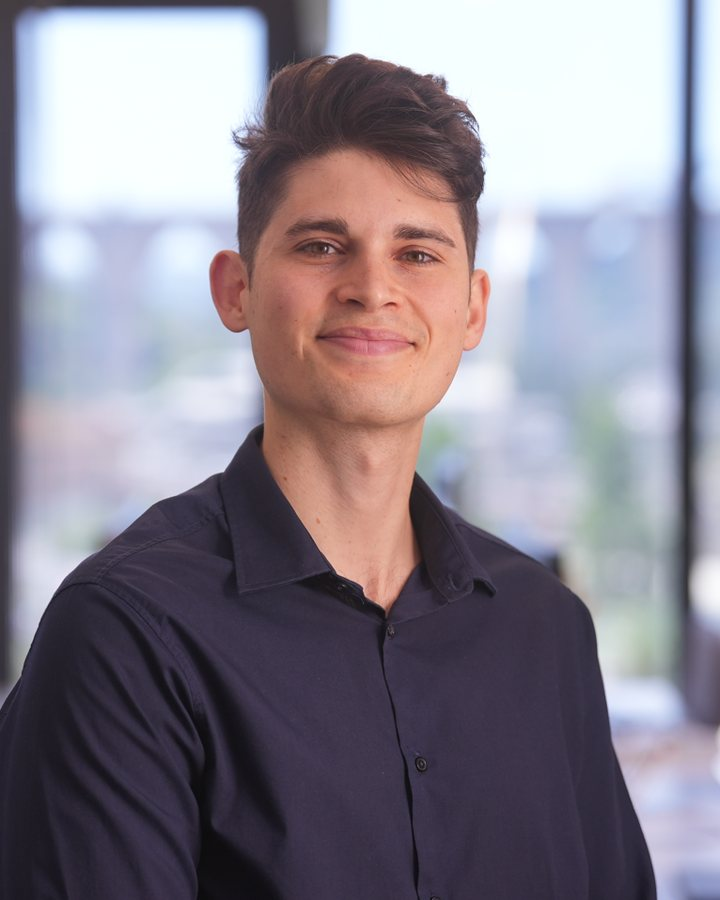
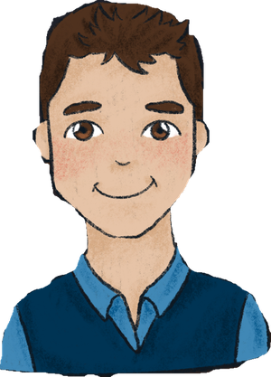

MatteoPaonessa

Marketing graduate from Milan, now in Lisbon. Master in Global Marketing at IPAM, Bachelor at IULM.
Theses, briefs and case studies for Lidl Italy, Will Media, Kiabi, PwC, Super Bock, Red Bull, Lemonsoda, Sulydance Academy, Nowa Jeans and Fondazione Umberto Veronesi.
Projects
16 pieces of work from my two degrees, most of them done in teams with classmates. Open a row to see the brief, what we did and the full report.

Get in touch
Email is the fastest way to reach me. You can also write on LinkedIn.